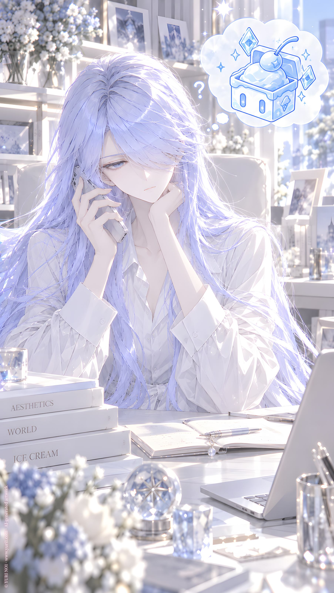

ORIGINAL TRACK ／ YURI NO1
接触不可。理解不能。
NO6 · Touch
Lyrics · Base Script
[Verse 1 — Calm]
アイシーからの電話。
今日は、 芝居の予定はない。
「ん？」
「アイスクリーム？……」
「あとで返事する。」
カチッ。
アイシーという、 あの女の子。
なぜ、 私に近づく？
すべて、 芝居の中だけで 止めておけばいいだろう。
[Pre-Chorus — Mechanical]
でも、 無料のアイスクリームなら。
違う。
彼女なら。
違う。
彼女を確認しに行くなら。
違う。
彼女を警告しに行くなら。
そうだ。
それでいい。
[Break — System Voice]
否。
演算異常。
なぜ？
警告内容は？
演算不能。
[Chorus — Restrained]
「もしもし？」
決めた？
彼女が聞く。
「何味？」
私が聞く。
あの女の子は答えた。
ぶどう。 いちご。 バニラ。
それから、 ソーダ。
「ソーダ味？」
「行く。」
[Post-Chorus — Mechanical]
ソーダ味。
視察任務。
始動。
女性接触距離警告任務。
猶予。
[Instrumental Break]
[Verse 2 — Calm]
アイシーという、 あの女の子。
なぜ、 私に近づく？
すべて、 芝居の中だけで 止めておけばいいだろう。
[Pre-Chorus — Mechanical]
でも、 無料のアイスクリームなら。
違う。
彼女なら。
違う。
彼女を確認しに行くなら。
違う。
彼女を警告しに行くなら。
そうだ。
それでいい。
[Break — System Voice]
否。
演算異常。
なぜ？
警告内容は？
演算不能。
[Final Chorus — Stronger Rhythm]
「何味？」
私が聞く。
あの女の子は答えた。
それから、 ソーダ。
「ソーダ味？」
「行く。」
[Outro — Cold Whisper]
ソーダ味。
視察任務。
始動。
女性接触距離警告任務。
……
猶予。
接触不可。
理解不能。
YURI NO1 Music / AI Generated Music / https://music.yuri1.com